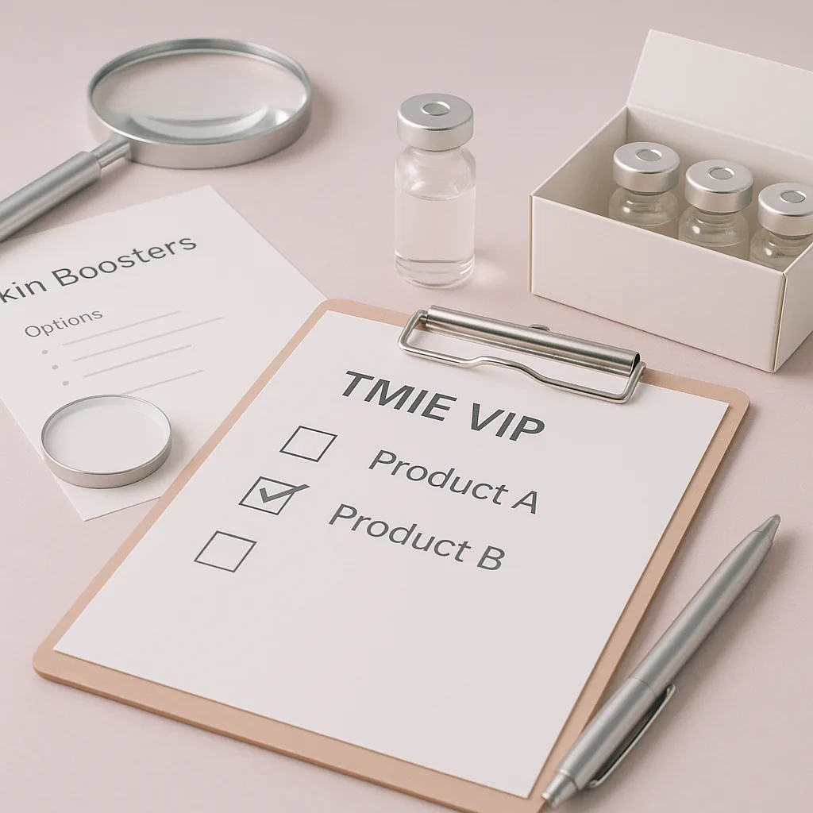
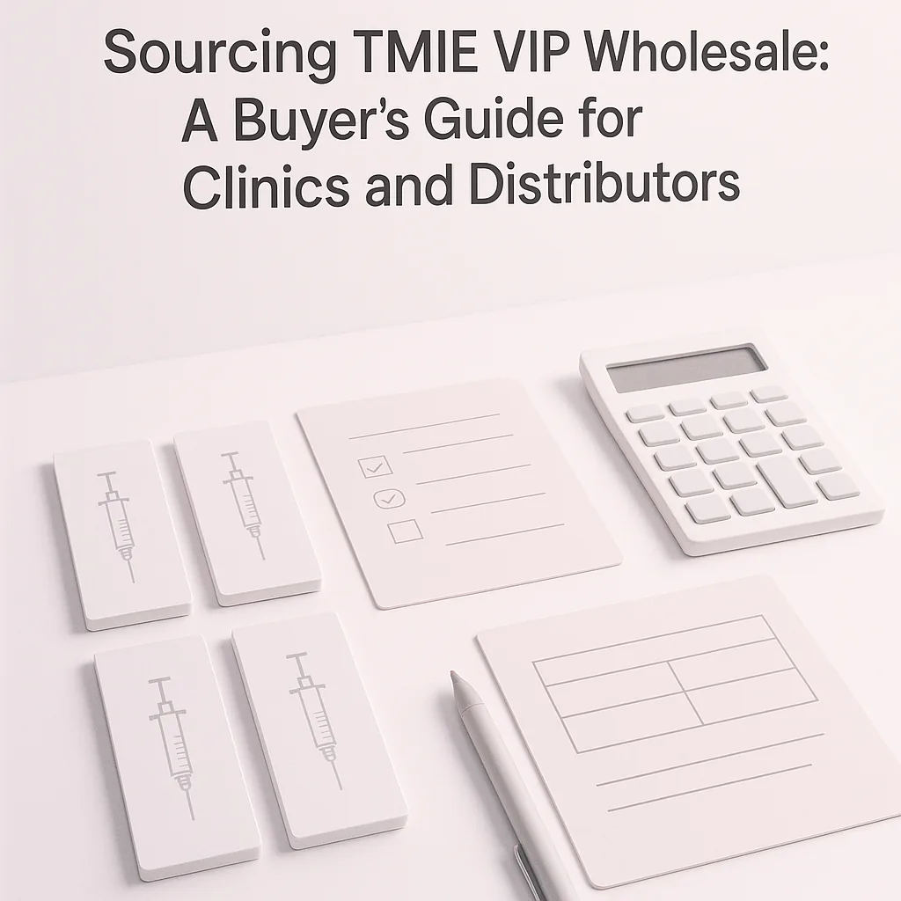
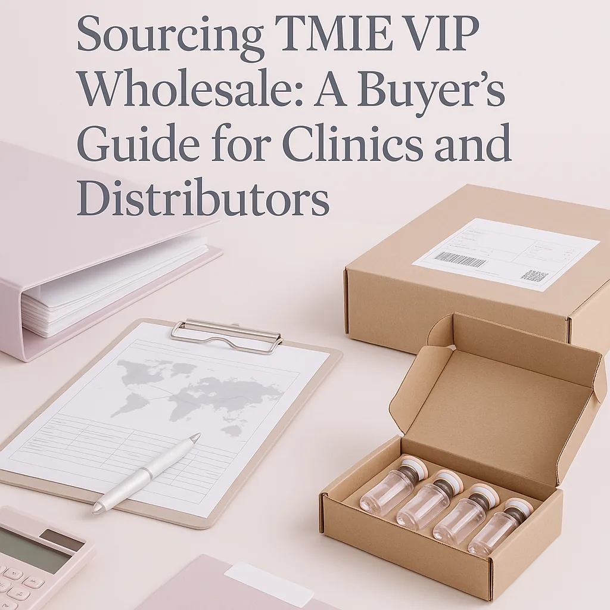

This guide provides practical insights for clinics and distributors on sourcing TMIE VIP wholesale skin boosters, ensuring informed purchasing decisions.
In the competitive landscape of aesthetic treatments, clinics and distributors face the challenge of sourcing high-quality products that meet their clients' needs. One such product category that has gained traction is skin boosters, specifically TMIE VIP wholesale options. Understanding how to navigate this sourcing process is crucial for maintaining a competitive edge and ensuring client satisfaction.
With the right knowledge and strategies, professional buyers can streamline their procurement process, ensuring they select the best products at the right prices. This guide aims to provide you with the essential insights needed to effectively source TMIE VIP wholesale products for your clinic or distribution business, enabling you to enhance your service offerings and meet client expectations.
Key Takeaways
- Understand the unique benefits of TMIE VIP skin boosters for your clientele.
- Establish clear communication with suppliers to ensure product quality and availability.
- Evaluate packaging and documentation to ensure compliance with local regulations.
- Plan your orders based on minimum order quantities (MOQ) and potential reorder needs.
- Utilize effective logistics strategies for shipping and receiving products safely.
What this guide covers
- Introduction to TMIE VIP skin boosters
- Buyer scenarios and needs
- Comparison criteria for sourcing
- Checklist before requesting a quote
- Logistics considerations
- MOQ and reorder planning
- Frequently asked questions
What buyers should understand first

TMIE VIP skin boosters are innovative products designed to enhance skin hydration and elasticity. These boosters are typically formulated with hyaluronic acid and other beneficial ingredients that improve skin quality and rejuvenate the appearance, making them an essential addition to any aesthetic treatment portfolio. As a professional buyer, it is essential to comprehend the unique properties of these products, including their formulation, intended use, and how they can benefit your clients. This understanding will enable you to make informed purchasing decisions that align with your business goals and client expectations.
Which buyers is this most relevant for?
This guide is particularly relevant for clinics, spas, resellers, and distributors looking to enhance their product offerings with TMIE VIP skin boosters. Buyers in these scenarios may have varying order planning needs based on their clientele and business model. For instance, a clinic may require smaller, more frequent orders to keep up with patient demand, while a distributor might focus on bulk purchasing to meet the needs of multiple clients. Additionally, spas may look for diverse product variants to cater to different treatment preferences. Understanding these differences will help you tailor your sourcing strategy effectively, ensuring that you meet the specific needs of your business and your clients.
How to compare options before ordering
When sourcing TMIE VIP wholesale products, it is important to compare different options based on several criteria:
- Product Type: Ensure you are selecting the correct formulation that meets your clients' needs. Different skin types may require different booster formulations.
- Brand Reputation: Research the supplier’s reputation in the market for quality and reliability. Look for reviews and testimonials from other buyers.
- Packaging: Check if the packaging meets your business's aesthetic and functional needs. Consider whether the packaging is user-friendly and aligns with your brand image.
- Batch and Expiry Visibility: Confirm that the supplier provides clear information on product batches and expiration dates. This transparency is crucial for maintaining product quality.
- Supplier Communication: Evaluate how responsive and supportive the supplier is during the inquiry process. Good communication can be indicative of future support.
- Destination Requirements: Consider any specific shipping or handling requirements based on your location. Different regions may have unique regulations that affect shipping.
Buyer checklist before requesting a quote


- Define your product needs and specifications, including preferred formulations and quantities.
- Determine your budget and pricing expectations to ensure you stay within financial limits.
- Identify the desired quantities and variants, keeping in mind client demand and preferences.
- Confirm your shipping destination and any special requirements, such as temperature control for sensitive products.
- Prepare questions for the supplier regarding product details, availability, and lead times.
- Review local regulations to ensure compliance with sourcing practices, including import/export laws.
Shipping, packing and documentation questions
Logistics play a crucial role in the sourcing process. As you prepare to order TMIE VIP wholesale products, consider the following logistics questions:
- What are the shipping options available, and what are their costs? Compare different carriers to find the best rates.
- How will the products be packed to ensure they arrive safely? Inquire about protective packaging methods used by the supplier.
- What documentation will be provided with the shipment? Ensure you receive all necessary paperwork for customs and compliance.
- Are there any customs considerations for your destination? Understand any tariffs or regulations that may apply.
- How will you track the shipment once it is dispatched? Confirm tracking options with your supplier.
MOQ, quotation and reorder planning
Understanding minimum order quantities (MOQ) is essential for effective sourcing. Different suppliers may have varying MOQs, which can impact your purchasing strategy. When preparing to request a quote, consider the following:
- Determine how many units you need based on your client demand and treatment schedules.
- Identify any product variants you may want to offer, ensuring you cater to a diverse clientele.
- Provide clear details about your shipping destination to avoid delays and ensure compliance with local regulations.
- Contact SOLA to confirm current availability and to receive a wholesale quotation tailored to your needs.
FAQ
What are TMIE VIP skin boosters?
TMIE VIP skin boosters are specialized products designed to enhance skin hydration and elasticity, commonly used in aesthetic treatments.
How do I find a reliable wholesale supplier?
Research suppliers, check reviews, and evaluate their communication and support during the inquiry process to ensure reliability.
What should I consider when planning my orders?
Consider your client demand, MOQ, and potential reorder needs to ensure you maintain adequate stock levels and meet client expectations.
How can I ensure compliance with local regulations?
Review local requirements and consult with qualified professionals to ensure your sourcing practices align with regulations and standards.
How do I request a quote from a supplier?
Prepare your product specifications, quantities, and shipping details, then contact the supplier directly to request a quote.
Contact SOLA for wholesale quotation via WhatsApp.
Planning a wholesale request?
Send product names, quantities and destination for a tailored discussion.
Contact SOLA on WhatsApp →General educational content for professional buyers. Not medical, legal, regulatory or import advice.